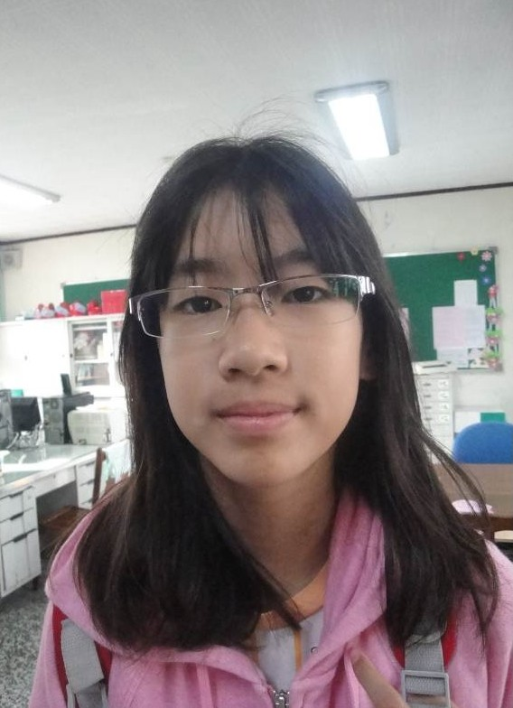
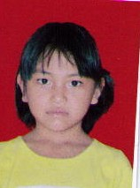
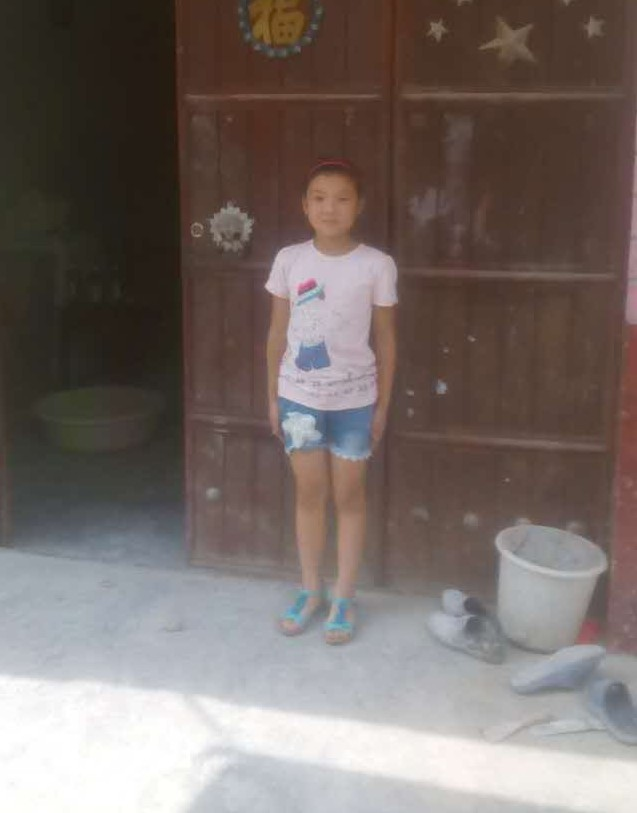

长期资助候选名单
长期资助候选名单
随着美中下一代教育基金会工作的进一步开展，我们得到了许许多多热心帮助贫困学生就学各界人士的帮助和支持，也为了满足许多希望长期资助贫困学生爱心人士的愿望，我们从2013年秋季起， 开始长期资助贫困学生的工作。原则上，已经获得过教育基金会资助的贫困孩子将于获得资助的第二年自动成为需长期资助候选对象，直到到高中毕业或自动辍学为止。
如果你愿意长期资助一位或几位优秀贫困学生，请查看我们提供的长期资助候选优秀贫困学生资料。资助方式请参看我们的《长期资助贫困孩子项目的实施细则》，或者直接和我们长期资助部联系 longtermsupport@fornextgen.org
长期资助有关表格：
台湾苗栗三義项目 （2017年立为长期资助项目）
-
宋昔远
男，出生于2001年6月14日，现就读苗栗县立三义高中中学国中八年级。(已获长期资助）
上课态度专注，学习认真，乐于参与课堂活动，与老师及同学的互动良好。努力上进。放学后，除了准备功课，还要照顾父亲。父亲脑溢血，尚在复健中。母亲白天照顾丈夫，晚上做夜班工作。昔远虽家境清寒，但积极进取。现住址为：台湾苗栗县三义乡双湖村双湖17邻136号。
经班主任徐文涓老师和英语老师孔秀玲老师推荐。 -
宋绍霖
男，出生于2001年12月2日，现就读苗栗县立三义高中中学国中七年级。(已获长期资助）
父亲患精神疾病，长期服药控制，也就无法胜任工作。母亲也离婚改嫁，目前父子相依为命，生活费用多靠政府及善心团体辅助。在此贫困环境下，丝毫没有灰心丧志，反而懂得力求上进，学业成绩一直都是班上前三名。在课堂中有十足的专注力并能举一反三，融会贯通。在同学中，对人和善真诚常给予同学适时的协助，人缘很好，深受大家的赞许，被推选为班长。现住址为：台湾苗栗县三义乡鲤鱼潭村鲤鱼口4邻85号。
经班主任古存仁老师和公民老师李海燕老师推荐。 -
连文于
女，出生于2003年2月4日，现就读苗栗县立三义高中中学国小六年级。
专注学习，对所交付的人物都能如期完成。对师长恭谦有礼，说话口条清晰，和同学相处融洽，待人友善，十分优秀。品学兼优，友爱同学，热心助人，积极上进，有礼谦和，人缘很好。平日加入直笛队，多才多艺。有参与美术，英文演说，客语演说比赛都获得很棒的成绩。现住址为：台湾苗栗县双潭村双连潭31之6号
经班主任刘思榕老师和自然老师萧政晓老师推荐。 -

黄芝绒
女，出生于2002年11月29日，现就读苗栗县立三义高中中学国小六年级。
在校表现认真负责，勤奋向学。在班上时老师的好帮手，凡师长赋予的任务都能迅速确保的完成。与同学也相处和睦，热心助人。担任图书馆小志工尽心尽力；参与学校的客演舞集社团，不畏平日练习时的辛苦，总是期许自己每一次都是最完美的演出。个性温柔典雅，乐观进取，才德与品格兼备，才华洋溢，整体的表现可圈可点，值得赞许。现住址为：台湾苗栗县三义乡双湖村13邻双湖5之3号3楼。
经班主任吴美琴老师和自然老师萧政晓老师推荐。
云南临沧云县项目 （2017年立为长期资助项目）
-
宋世梅
女，出生于2001年11月27日，现就读云南云县涌宝镇茶山小学五年级。(已获长期资助）
主要靠家庭种地过活。家庭平均月收入300元。
经数学张朝安老师和语文徐守芬老师推荐。 -
张新梅
男，出生于2000年1月3日，现就读于武鸣县府城填中心学校八年级。(已获长期资助）
仅靠父亲一人靠种植玉米和水稻获得的收入维持家庭生计。家庭月收入250元。
班主任潘雄林老师推荐意见：该生学习成绩优秀，为人友善，家庭生活确实困难，同意申请。 -
曹梦雪
女，出生于2004年4月10日，现就读云南云县爱华镇长坡岭完小五年级。(已获长期资助）
主要靠家庭种地过活。是山区产量低，家庭平均月收入300元。
经数学李世安老师和语文李建琼老师推荐。 -
李义
男，出生于2005年7月15日，现就读云南云县爱华镇长坡岭完小四年级。(已获长期资助）
父亲病故，母亲有病。家里还有70多岁的爷爷，奶奶要赡养，家庭平均月收入260元。
经数学沈燕老师和语文吕国庆老师推荐。 -
李天梦
女，出生于2006年9月30日，现就读云南云县爱华镇长坡岭完小二年级。(已获长期资助）
田地少，产量低，父母多病，家庭平均月收入300元。
经数学杨星银老师和语文杨娟老师推荐。 -
李德俊
男，出生于2002年8月6日，现就读云南云县爱华镇长坡岭完小六年级。(已获长期资助）
田地少，产量低，主要靠打零工。是学校的少先队大队长，家庭平均月收入400元。
经语文李世艳老师和数学杨达昕老师推荐。 -
罗定国
男，出生于2001年4月13日，现就读云南云县爱华镇长坡岭完小六年级。(已获长期资助）
主要靠父母亲打零工维持，家庭平均月收入350元。
经语文杨世芹老师和体育李志勇老师推荐。 -
赵小雪
女，出生于2002年1月，现就读云南云县爱华镇长坡岭完小六年级。(已获长期资助）
山区，靠父母种地，收入低，家庭平均月收入300元。
经语文李世艳老师和数学杨达昕老师推荐。 -

陈家佳
女，出生于2004年8月，现就读云南云县晓街乡完小二年级。(已获长期资助）
父亲，母亲打零工，还要赡养80岁的爷爷和奶奶，家庭平均月收入400元。
经数学潘伴娥老师和语文酤镇儒老师推荐。 -
黄凯凯
男，出生于2006年12月，现就读云南云县爱华镇长坡岭完小四年级。(已获长期资助）
山区，耕地少，产量低。要赡养老人，家庭平均月收入300元。
经语文李光媛老师和数学许家军老师推荐。
山东梁山项目 （2017年立为长期资助项目）
-
陈玉莹
女，出生于2004年10月8日，现就读山东梁山县小路口镇戴庄小学四年级。(已获长期资助）
母亲患甲状腺癌现在正在住院治疗。陈玉莹从小双侧骨关节脱位经多次手术基本治愈！父亲既要照顾生病母亲和体弱多病的陈玉莹还要打零工养家！享受农村低保。
经班主任高明伦老师和李玉宝老师推荐。 -
林亚星
女，出生于2005年5月25日，现就读山东梁山县马营镇长青希望小学五年级。(已获长期资助）
林亚星其家庭无其他经济来源，靠种地维持全家生活。享受农村最低保障。
经王秀秀老师和杨浩老师推荐。 -
石玉笑
女，出生于2007年1月8日，现就读山东梁山县徐集镇励耘小学三年级。(已获长期资助）
父亲自2009年以来外出至今未归，爷爷奶奶因年迈失去劳动能力，母亲因患病，现已两年未能工作，家庭情况十分困难。 -
王明超
女，出生于2007年11月13日，现就读山东梁山县马营镇长青希望小学二年级。(已获长期资助）
父亲常年在外打工，收入甚微。母亲在家务农照顾70多体弱多病的奶奶和兄妹三人家庭困难，兄妹三人都在上学。
经班主任梁成廷老师和杨浩老师，王秀秀老师推荐。 -

吴娜
女，出生于2005年9月，现就读梁山县马营镇长青希望小学六年级。(已获长期资助）
父亲2014年查出双侧股骨头坏死，2016年春节刚过吴娜被发现左眼白内障现已在山东省立医院手术，术后第三天又发现左眼视网膜脱落现正在治疗中。
经王秀秀老师和杨浩老师推荐。 -
徐良艳
女，出生于2005年7月，现就读梁山县马营镇长青希望小学四年级。(已获长期资助）
其父现在监狱服刑，其母改嫁跟随年老体弱多病的爷爷奶奶生活还有一弟弟，基本靠低保和土地种植。
经王秀秀老师和杨浩老师推荐。 -
杨展鹏
男，出生于2007年4月，现就读梁山县拳铺镇东杨集小学三年级。(已获长期资助）
父亲因病去世，母亲改嫁，现在跟着爷爷、奶奶生活。由于爷爷奶奶年龄较大身体较差不能外出务工，收入靠低保和种植土地。
经班主任艾改平老师和杨奉雨老师推荐。 -
张全坤
男，出生于2004年6月8日，现就读梁山县马营镇长青希望小学五年级。
家中五口人，其奶奶90多高龄生活不能自理，父母和姐姐都有精神病障碍，生活只能自理，基本失去劳动能力，依靠低保和土地种植维持，张全坤长期跟着姑姑生活。
经王秀秀老师和杨浩老师推荐。 -
张冉冉
女，出生于2006年5月，现就读梁山县马营镇长青希望小学三年级。(已获长期资助）
其母因病去世，其父身体不好且年龄偏大家庭困难低保户。
经王秀秀老师和杨奉雨老师推荐。 -

张廷超
男，出生于2006年12月，现就读梁山县馆驿镇王庄小学三年级。(已获长期资助）
张廷超是单亲家庭，其父残疾（二级残疾）基本无劳动能力，平时靠爷爷奶奶抚养。种地为生无其他经济来源。享受农村低保。
经班主任田春丽老师和于玉峰老师推荐。
陕西宁强项目 （2017年立为长期资助项目）
-
何杰
女，出生于2009年4月16日，现就读陕西省宁强县胡家坝镇龙王小学一年级。(已获长期资助）
学习刻苦，成绩优秀。6口之家，爸爸一人外出务工，母亲在家务农、照顾老小，经济拮据，家庭人平均月收入300元。
经语文谭富海老师和数学周国岐老师推荐。 -
向煜晨
女，出生于2006年9月，现就读陕西省宁强县胡家坝镇龙王小学三年级。(已获长期资助）
单亲，爷爷奶奶多病，靠父亲一人在外务工养家，家庭人平均月收入600元。现住址为： 陕西省汉中市宁强县胡家坝镇周家河村一组。
经班主任,语文刘启松老师和数学白华亭老师推荐。 -

周安研
男，出生于2008年10月18日，现就读陕西省宁强县胡家坝镇龙王小学一年级。(已获长期资助）
学习刻苦，成绩优秀。两口之家，爸爸残疾在家，父母离异，经济拮据，家庭人平均月收入300元。
经语文谭富海老师和数学周国岐老师推荐。 -
周美琳
女，出生于2008年4月7日，现就读陕西省宁强县胡家坝镇龙王小学二年级。
家庭收入微薄，奶奶多病，主要靠妈妈的临时工作维持家庭生活，家庭人平均月收入500元。
经语文赵永发老师和数学刘朝东老师推荐。 -
张精荣
男，出生于2005年7月10日，现就读陕西省宁强县胡家坝镇龙王小学五年级。
学习刻苦，成绩优秀。3口之家，爸爸常年有病，母亲残疾，都不能外出务工，在家务农，贷款建房8年多，无力粉刷，现无劳动力，主要靠种植，养殖维持家庭生活，家庭人平均月收入700元。
经语文殷武强老师和数学殷元才老师推荐。 -
杜贵豪
男，出生于2006年3月，现就读陕西省宁强县胡家坝镇龙王小学四年级。(已获长期资助）
学习刻苦，成绩优秀。3口之家，爸爸常年有病，不能外出务工，在家务农，家庭人平均月收入600元。现住址为： 陕西省汉中市宁强县胡家坝镇鲁家寺村五组。
经语文白怀茂老师和数学张小芬老师推荐。 -
殷学梅
女，出生于2006年2月24日，现就读陕西省宁强县胡家坝镇龙王小学五年级。(已获长期资助）
学习刻苦，成绩优秀。六口之家，爷爷奶奶年老多病。爸爸一人外出务工，姐姐在外上大学，母亲在家务农，修房欠债，经济拮据，主要靠母亲外出打零工维持家庭生活 奶奶患有癌症，家庭人平均月收入750元。
经语文殷武强老师和数学殷元才老师推荐。 -
王嘉兴
男，出生于2007年8月，现就读陕西省宁强县胡家坝镇龙王小学三年级。(已获长期资助）
学习刻苦，成绩优秀。全家七口人，老人多病，爸爸一人外出务工，姐姐上大学，居住条件恶劣，不通公路，便道难行，经济拮据家庭人平均月收入700元。
经班主任,语文刘启松老师和数学白华亭老师推荐。 -
白开升
男，出生于2008年7月31日，现就读陕西省宁强县胡家坝镇龙王小学二年级。(已获长期资助）
父亲早亡，奶奶90岁高龄，母亲一人在家带孩子上学，照顾老人，父亲在时贷款建房，现无经济来源，欠贷无力偿还，十分清苦，家庭人平均月收入500元。
经语文赵永发老师和数学刘朝东老师推荐。 -
白慧玲
女，出生于2008年8月4日，现就读陕西省宁强县胡家坝镇龙王小学二年级。(已获长期资助）
五口之家，两个学生，母亲患精神病，奶奶年老多病，父亲一人外出打工养家，经济拮据，还要供养姐妹上学，家庭人平均月收入800元。
经语文赵永发老师和数学刘朝东老师推荐。 -

罗静茹
女，出生于2006年8月，现就读陕西省宁强县胡家坝镇龙王小学四年级。(已获长期资助）
学习刻苦，成绩优秀。全家五口人，只靠父亲一人打零工，土地也很少，家庭人平均月收入600元。
经语文白怀茂老师和数学张小芬老师推荐。 -

莫怡凡
女，出生于2007年8月，现就读陕西省宁强县胡家坝镇龙王小学四年级。(已获长期资助）
全家四口人，就一人打工，家住偏远山区，土地少，家庭人平均月收入500元。
经语文白怀茂老师和数学张小芬老师推荐。 -
陈忠云
男，出生于2004年10月6日，现就读陕西省宁强县胡家坝镇龙王小学五年级。(已获长期资助）
家住高寒地区，交通闭塞，6口之家，爷爷、奶奶80多岁高龄，哥哥一人在家带孩子上学，照顾老人，贷款建房，家徒四壁，现爸爸妈妈外出务工还债，务工是唯一经济来源，家庭人平均月收入850元。
经语文殷武强老师和数学殷元才老师推荐。 -
鲁建锋
男，出生于2007年9月，现就读陕西省宁强县胡家坝镇龙王小学三年级。
祖父母体弱多病，造成较多经济负担，只有父母出去务工，没有其它经济来源，家庭人平均月收入800元。
经班主任,语文刘启松老师和数学白华亭老师推荐。 -
鲁东升
男，出生于2006年4月18日，现就读陕西省宁强县胡家坝镇龙王小学五年级。
父母离异，祖父长期患糖尿病，导致家境贫穷。主要靠父亲外出务工，维持家庭开支，家庭人平均月收入800元。
经语文殷武强老师和数学殷元才老师推荐。
Top